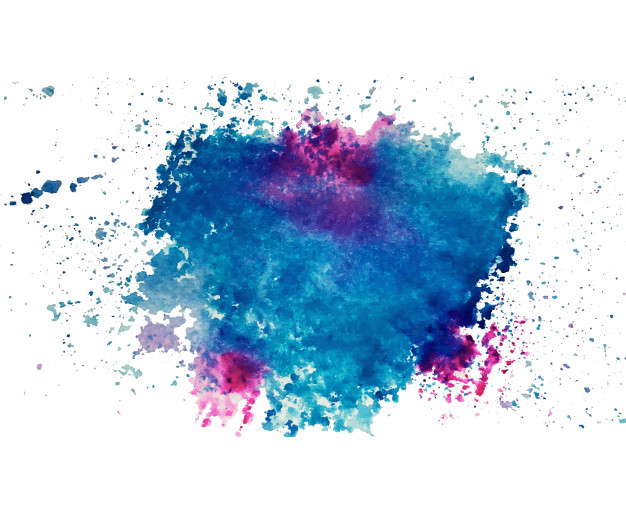
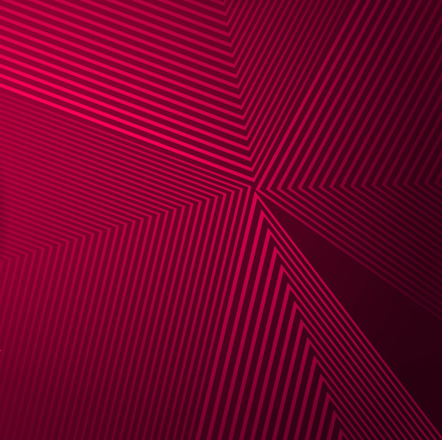
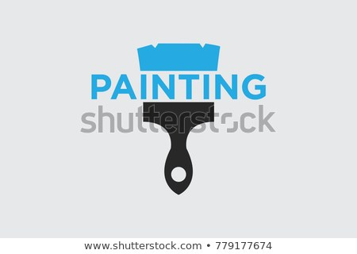
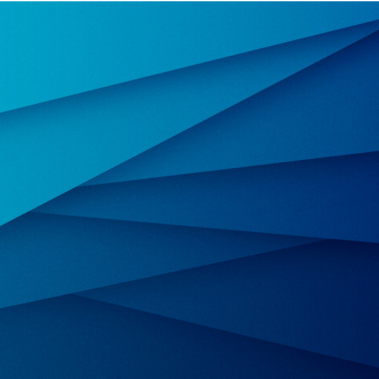
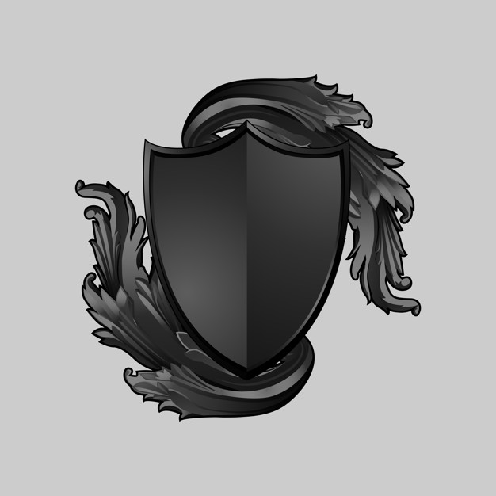
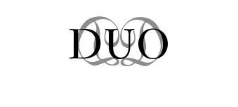
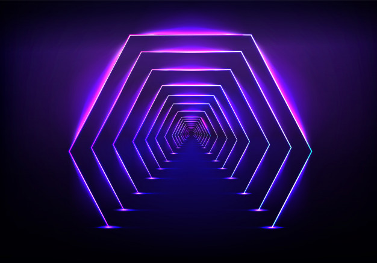
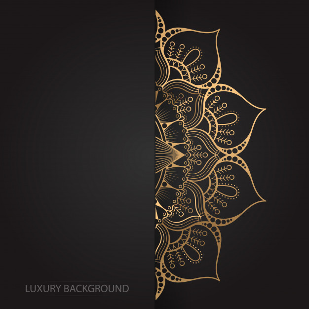
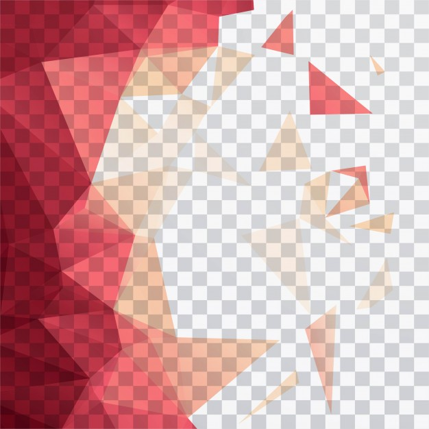
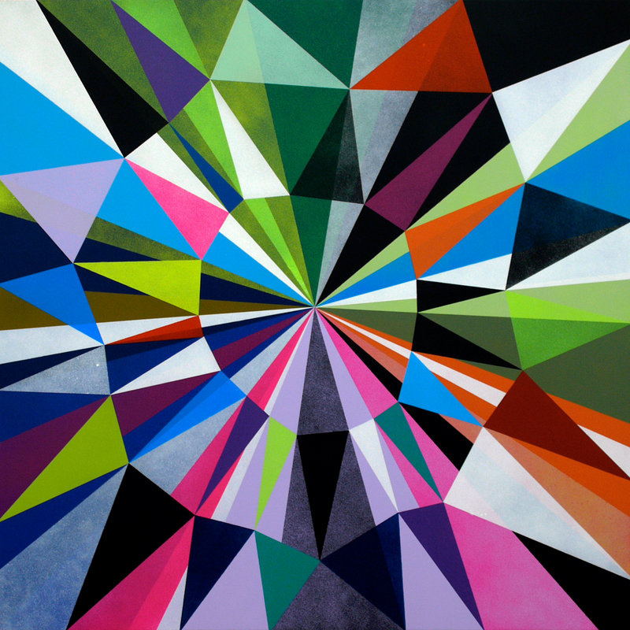
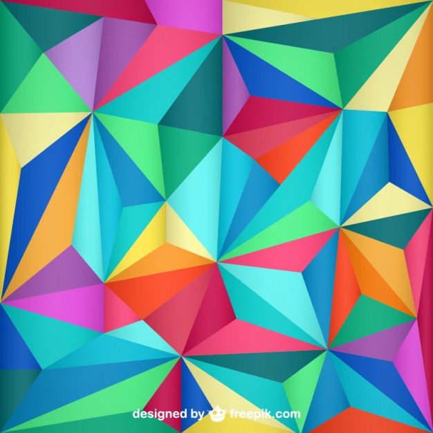
ABOUT
I'm an illustrator and graphic designer from St. petersburg, Russia. I specialize within the fields of illustration, visual identity, editorial, print and web design.I like to work in a wide range of styles and this practice makes me able to quickly adapt to new challenges.
My passion is to produce meaningful design that engages contemporary culture and adhering real purpose and value. I speak Russian, English and also basic HTML, CSS and JavaScript.
For freelance, collaboration, any other questions or just to say hi, please do not hesitate to get in touch!
CONTACT
email: hello (at) shimanski (dot) co
instagram: shimanski.co
dribble: shimanski
ello: shimanski